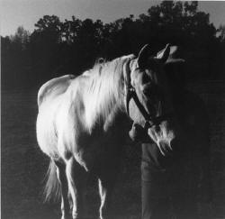

James Twiggs
Pictures of the Artist (Chapter 1)
The main
character is a photographer named Tom Watts.
This chapter recounts, in snapshot form, key parts of his upbringing
in a small
Arkansas
town in the 1940s.
Molly
Tom Watts was born on January 3, 1938, in
Mud Creek, Arkansas, a town of 967 located in the northwest corner of
the state. His father, Virgil, was thirty-two at the time and
editor-publisher of the Mud Creek Weekly Herald; his mother, Molly, was
a thin dark-haired girl of fifteen who, with her pale skin, delicate
features, and sad brown eyes, was generally considered to be the town
beauty. Some people thought it queer that a girl as pretty as Molly
Cooper would get mixed up with a man who was not only twice her age but
was also a club-footed, four-eyed smart aleck who was nearly bald. On
the other hand, people who remembered Virgilís fatheróa driving force in
the community for many yearsóor who liked Virgil in spite of his
defects, wondered how a respectable businessman, even one who was
crippled, could attach himself to a teenagerónever mind how prettyófrom
a family as poor, as seedy, as extensive, and as crazy as the Coopers
had always been. They were white trash, pure and simple, living in
shacks and rundown trailerhouses scattered over five acres of worthless
land near the Oklahoma line. However you tried to look at it, the
marriage made little enough sense.
No one knew Virgil was even seeing Molly until, three months before the
baby was born, she dropped out of school and moved into his little
two-story house on the west side of town. This happened at the beginning
of her sophomore year. According to Virgil, they had been married eight
months earlier. He said he had the certificate to prove it. But most
people figured that even if the certificate existed, he had altered the
date to make it seem as if they were married before Molly became
pregnant. Other people thought they werenít married at all and that
Virgil had forged the entire document in his print shop. A few people
even wondered whether Virgil was Tomís natural father (as if the
clubfoot might be a sign of sterility), and one crazy, toothless old
woman, a former midwife who was nearly blind, muttered about the
striking resemblance between Baby Tom and Lewis Cooper, Mollyís
good-for-nothing older brother, who had left town about the time she
started to show. This last rumor didnít really catch onónot even after
Lewis, who never returned home alive, died in the South Pacific in 1942.
Perhaps it was too rich, too vile, even for the gossip mongers at the
First Baptist Church. More likely, though, the resemblance in question
was simply not worth speculating about. Mollyís family blood was so
powerful that any baby born to a Cooper woman, or fathered by a Cooper
man, looked like every other Cooper that had ever existed. Where Coopers
were concerned, resemblance proved nothing.
***
Until Lewis was killed, even cynics had to admit that married life
suited Molly Watts. Although she was never outgoing, she became a bit
less bashful and ashamed; she made herself presentable in a modest,
womanly way; and she was sometimes friendly enough if you saw her in the
grocery or hardware store, or just out on the street pushing Baby Tomís
carriage or, later, his stroller. If you wanted to stop and fuss over
the baby for a while, she would stand there blushing with pleasure while
you did it.
Marriage was good for Virgil as well. As long as his dad was alive,
Virgilís smart mouth, his advanced social ideas, his liking for fast
cars, stylish clothes, and flashy women had been goodnaturedly
tolerated. After the old man died in 1936, Virgilís excesses and
somewhat deviant views became more and more offensive, especially in the
midst of continuing hard times for so many in Mud Creek. The marriage
did what the death of his father had failed to do. It toned him down. It
gave him some stability. With the coming of the war, it made bearable
his being left behind while other men, perhaps no braver and certainly
no more passionate in their hatred of the enemy, were fighting and dying
in foreign lands. As if to prove his patriotism, he worked long and hard
on the homefrontóselling bonds, collecting metal and tinfoil, giving
speeches at the church and the school, leading civil defense drills in
the city park, and filling his little paper with war news, maps,
inspirational pieces, and useful articles on such matters as rationing
and how to behave in case of a bombing.
Then Lewis, who was not merely killed in action but was captured and
tortured to a slow horrible death, was brought home, minus his genitals
somebody said, and his eyeballs, and most of his skin, and all of his
fingers, and was buried with impressive military honors. Molly removed
the Blue Star from her window. But instead of putting up a Gold Star,
she pulled the blinds, quit taking the piano lessons that had meant so
much to her, and stayed inside for a year, refusing all visitors. After
that, she made an occasional appearance outdoors, but went no farther
than her own backyard till the war ended. And then, in the fall of 1946,
Virgil bought a new red Mercury convertible. A few days later, he and
Molly drove out of town on the first of their famous and mysterious
weekend trips.
***
All through the fighting, though he had never previously been religious,
Virgil attended the First Baptist Church every Sunday morningóperhaps
for the sake of the war effort. And now, at warís end, Molly started
coming to church too. She would usually join in the singingóher lips
moved, anywayóand she listened politely enough to the sermon; though,
some said, without the slightest trace of true religious interest.
Because she never took part in church activities, or stayed to visit
after the service, it was natural to wonder if she was only there to
show off the beautiful and expensive dressesócotton in the summer, silk
the rest of the yearóthat Virgil was buying for her. Or maybe it was
Virgil who was showing offóshowing off his high-toned taste in women and
womenís finery. He had done some of that, people remembered, when, fresh
out of college, he took over the paper in 1930. He had girlfriends those
first years back in town, pretty girls from Kansas City, who also wore
clothes that made a person stop and stare.
***
Tom was eight when his parents started going on their trips. They would
drive away on a Thursday afternoon, as soon as the Herald had been
printed and mailed, and return on Sunday night. During their absence,
Tom stayed with his Aunt Bev and Uncle Lester, both in their fifties,
who lived ten miles away in Siloam Springs. Although Virgil jokingly
referred to Bev and Lester as the Watts Family Commies, they were in
factóas Tom understood years lateróanarchists who had lost their jobs as
teachers in California because of their convictions. Lesterís field was
English. Bev had taught art, and she still worked on three or four
paintings, simultaneously, during her spare time. She did this in the
utility room next to the kitchen. She would have preferred to do it on
the glassed-in sunporch, where she kept most of her green plants, or,
weather permitting, out in the yard, but she knew the neighbors would be
alarmed at the sight of a woman artist, especially if she was painting
anything but flowers and landscapes. It might even give the local boys
another excuse for egging or t.p.-ing the house.
The attic, Bev said, was full of paintings she had done in California,
including her complete Series #3, entitled Cubed Snake & Mincemeat Pi.
She didnít dare let the neighbors see these paintings either, because in
them she had done for Lesterís genitals what Picasso had done for the
female face. She had sliced them up and rearranged them on the canvas
with results that were as easily recognizable as they were grotesque.
These paintings had caused quite a stir in San Diego a few years ago; in
Siloam Springs, which advertised itself as Jesus City U.S.A., they might
well (or so Bev liked to think) cause a lynching. Thatís why she kept
them hidden away in her attic. She was always planning to show them to
Tom, but never got around to it. This was fine with him. Bevís
descriptions of the paintings made him remember what had happened to his
Uncle Lewis during the war.
The rest of the house was crammed with booksósome in shelves, others in
boxes, still others stacked in corners and along the walls and on every
table in every room. It was only natural that, beginning with his first
visit to Bev and Lesterís, Tom would entertain himself by reading novels
and leafing through their numerous picture books, which covered all
periods and styles of art. When he first saw Bevís
paintings-in-progress, they made no sense to him. As far as he could
tell, they were meaningless blobs of color. Although he didnít say so,
he thought it was stupid even to refer to them as paintings. It didnít
help that Virgil got so much mileage out of sneering at them. But after
he had been looking through the picture books for a while, and had
discovered works by Kandinsky, OíKeefe, and Miro, Tom could at least see
what Bev was trying to do. He still didnít understand what any of it
meant, but he was beginning to perceive and appreciate patterns. Even
so, the pictures he liked best contained recognizable people, places,
and objects. Years later he could recall the thrill he felt the first
time he saw a certain work at Bevís houseóa drawing by Daumier or
Schiele, for example, or a painting by Giovanni Bellini or Edward
Hopper. And once in an interview in London, when a critic marveled at
the quality of the light in some of his photographs, Watts said that he
owed his appreciation of light to his Aunt Bev, back in Arkansas, who
had first showed him Vermeer when he was eight years old.
***
While Tom was at their house, reading on their sofa, Bev and Lester
would sit at the dining-room table, knitting, playing gin rummy, or
shelling peas as they affably dismantled capitalism and religion and
made plans to destroy the state without hurting anybody. Although they
were reluctant to let the art books out of the house, they encouraged
Tom to borrow as he pleased from the rest of their collection. It wasnít
unusual, at the end of a weekend, for him to take ten or twelve books
home with him. Starting with Robin Hood, King Arthur, and the Arabian
Nights, he moved, rather haphazardly, through Heidi, the Hardy Boys,
Robinson Crusoe, Wells, the BrontÎ sisters, Stevenson, Alcott, London,
Tarkington, and Poe, and on up to Dickens and Twain and Melville and
beyond.
***
Virgil had books too, but his were mostly of a factual
kindóencyclopedias, atlases, biographies, histories of religion and
philosophy, books of quotations. At the office he received magazines and
papers from all over the world and brought them home at night. With the
fighting over and democracy safe, he was again reading his prewar
heroes, Mencken and Darrow and, of course, Lord Byron, with whom he
identified in more ways than one. In short, he had gone back to the
skeptical, cosmopolitan outlook he was cultivating before the Japs
bombed Pearl Harbor. Now when he pored over his books, magazines, and
papers far into the night, he was not looking for propaganda to further
the cause of the Allies but for tidbits of thought and information,
snacks for the mind he called them, that would enlighten his readers
without upsetting them too much. Under a story about a missing dog, for
example, you might find:
Opinions are made to be
changedóor how is truth to be
got at?
óLord Byron (1788-1824), famous clubfooted poet
known as Godís gift to women.
Or, under a column of canning tips, something like this:
None are so fond of
secrets as those who do not mean to keep them.
óC. C. Colton (1780-1832), English author.
ìYour typical Mud Creeker,î Virgil was fond of telling his son, ìhas to
be
fed the truth in tiny morsels if heís to keep it down long enough to be
digested.î Tom enjoyed hearing his father say such things. He especially
liked it that Virgil could say them without taking himself too
seriously. It was as if he was trying out for a part in a school play
rather than expressing his innermost beliefs. Virgil well understood
that, for all his pretensions, he was as much a Mud Creeker as the next
person. Thatís what Tom liked best about his dad.
***
Molly had little interest in reading matter of any kind, but she loved
music so much that Virgil had bought her a piano as a wedding present.
For the next four years, right up until the time Lewis was buried and
she first became severely depressed, she took lessons from Old Lady
Sharp, who had recently retired from high-school teaching. Because she
lived right across the street, and because she gave the lessons in the
Watts house, she was the townís leading authority on Molly and Virgil.
According to her, the lessons were a complete waste of money. Molly, she
said, had no feel for the instrument even before her brother died. She
was even worse at playing the piano than she was at washing windows,
sweeping floors, cleaning bathrooms, cooking meals, and doing the
laundry. A Cooper, the teacher went on, if he was going to attempt music
at all, ought to stick to harmonicas and tambourines. Anything else
would be too taxing. A few years later, when Tom took lessons from her,
Old Lady Sharp pronounced him talentless as well. He was a Watts in name
only, she added. Musically and in all other important respects, he was a
Cooper to the bone.
After the war, when Mollyís depression had lifted somewhat, she would go
through spells of playing, or trying to play, the few pieces sheíd
learned from Old Lady Sharpóhymns and childrenís songs and little bits
of Chopin and Mozart. Mainly, however, she slaked her thirst for music
by purchasing records. She never went on one of her trips without
bringing home more records and albums than the average music-lover would
buy in a year. Although she enjoyed all kinds of music, including gospel
and classical, her favorites were jazz, country, and boogie-woogie. She
knew the words to fifty Billie Holiday songs and once announced at the
dinner table that she would give both of her legs if she could play the
piano like Mary Lou Williams, whose latest three-record album she was
wearing out in a hurry. This remark didnít set well with Virgil, for
obvious reasons. Molly, who was usually so sensitive about his
affliction, apologized for a week or more.
***
Aunt Bev keeled over dead just before Tomís thirteenth birthday. Lester,
after giving the boy his entire library of two thousand books, and after
burning all of Bevís paintings at the city dump, headed back to
California, perhaps to resume his political work. From then on, when
Tomís parents went out of town, they let him stay by himself in the
house in Mud Creek. He was a quiet boy, without friends who might lead
him astray, and he was responsible, as his father liked to put it, to a
fault. They had no qualms about leaving him alone. Virgil gave him two
extra-wide, dark blue matchbooks, each embossedóin letters and figures
of glittering silverówith a name, an address, and a phone number. One
matchbook was from the Paradise Hotel in Kansas City, the other from the
Western Swing Bar, Grill and Motor Hotel in San Antonio. In case of
emergency, Virgil said, he and Molly could always be reached at one or
the other of these establishments. Tom recalled that identical
matchbooks had been fastened to the wall next to the phone at Bev and
Lesterís house.
When he found out they only visited two cities, Tom realized he could
tell where his parents had been by the records Molly played when they
returned. Jazz or boogie-woogie meant Kansas City; country meant San
Antonioóor, as Virgil sometimes called it, imitating the high-pitched
voice of Bob Wills, San-NAN-tone. One time when he said this, he
attempted a little dance step, a kind of turn, but caught his clubfoot
in the rug and fell to the floor. Virgil laughed and pretended to have
done it on purpose; Tom and Molly pretended to believe him.
***
On his first couple of weekends by himself, Tom, as his parents had
expected he would, spent his time reading. On the third weekend, without
planning to do so, he made a systematic search of their closets and
drawers. Within two hours he had discovered hidden caches of liquor,
French and Turkish cigarettes, condoms, sex manuals, and pornography,
consisting mainly of tiny eight-page books of cartoon characters fucking
and big glossy photographs of real people doing the same thing. Tom had
never, at this time, seen his parents drink or smoke, but he was not
exactly surprised to learn that they had such habits. Kids at school had
talked of making similar discoveries in their own houses. It went with
being a Baptist. And he knew that Virgil and Molly engaged in sex. He
knew it in the abstract, and also from noises he heard at night. What
did surprise and thrill him was their apparent depth of interest in a
subject that he tooódriven by pubertyís relentless demandsóhad become
desperately curious about.
From that day on, he could hardly wait for Virgil and Molly to leave
town so he could puff on foreign cigarettes, sip small amounts of
liquoróenough to make him high, not enough to be missedóand jack off to
his heartís content and without fear of being caught. In the beginning,
he found the eight-pagers and the sex manuals more exciting than the
photos, which were too raw, too rich in detail, for his young eyes and
mind to appreciate. Typically, he would lie naked on his bed, drinking
and smoking while he read a few pages of a sex manual. Then, with his
cock throbbing ever more urgently, he would leaf frantically through the
eight-pagers until his excitement became unbearable. At that point he
would shoot off while gazing at a cartoon and saying aloud what one of
the characters was saying: ìKiss me, Tess honeyóIím coming!î or ìOh
Sluggo!óoh oh oh!î or ìYou can yodel in my valley anytime, Harold Teen!î
Then he might sleep, or eat a sandwich, or go outside and, naked except
for his underpants and a pair of old tennis shoes, run through the woods
behind the house for a while. Or he might simply read another chapter
from one of the sex manuals, which, once heíd cracked the code they were
written in, could revive a guy pretty quickly.
On Sunday afternoon, a couple of hours before his parents returned home,
Tom would take a last quick tour through the photographs, which
disturbed him no end. He noticed early on that the same people, in
different combinations and different poses, appeared in all of the
pictures. In fact, if he had counted rightly, only nine subjectsófive
men and four womenówere represented in the entire batch of twenty-three
photographs. What kinds of people would pose for such pictures, he
wondered, and what kind of photographer would take them? Although he
didnít, at this stage, linger over the photographs, they stayed with him
in surprising ways. Except on his weekends alone, when he still favored
the eight-pagers, it was the photographs he thought about when he
masturbated, which was every day, at least once and usually two or three
times. The people in the photographs also enlivened his wet dreams. They
became so vividly real to him that he gave them names from the books he
was reading.
***
Within a year he had become sophisticated enough to put the eight-pagers
aside and confront the photographs directly. He jacked off leisurely
now, enjoying not only the final explosion but the whole array of
sensations leading up to it. Afterward, careful not to bend them or
smear them with come, he would go through the pictures again and again,
looking for something he had missedósome clue to the meaning of an
expression, a gesture, a position, or an angle of penetration. Sometimes
he thought he understood things that later he decided were either
beneath or beyond all comprehension. And always he wondered how much of
what he was looking at was real and how much was put on for the camera.
For example, did people who were fucking really grin in that peculiar
wayóor were they all just fooling around, like kids being photographed
at a picnic? More than once he jacked off in front of a mirror, hoping
to glimpse on his own face the true look of passion, only to find that,
where love was concerned, he knew as little about himself as he knew
about the people in the pictures.
***
As the months passed and he became more familiar with the photos, he
noticed that they changed from time to time. Although the total number
remained about the sameóit varied between nineteen and twenty-threeóas
many as five new pictures might appear and a few old ones might vanish.
This happened with a picture of Jay Gatsby doing Madeline Usher
doggy-style. They were two of his favorite charactersóJay with his charm
and his broad generous smile, Lady Madeline with her ethereal beauty.
Although each of them showed up in other pictures as well, this was the
only one in which they were together. Tom hated to see it go.
Sometimes new people popped up in the pictures, and old ones departed.
The month he gained Emma and Big Blonde, for example, he lost Cora, Lady
MacBeth, and Hester. The departure of Mellors was offset by the arrival
of Nick Adams. Becky Thatcher, looking no older than Tom, appeared one
month and was gone the next. She was a big favorite indeed, while she
lasted. Under the circumstances, he decided, a man would be a fool to
become too attached to any one particular woman.
***
On a Thursday in February, just after his parents left town, Tom got out
the pictures and carried them to his room. Three of his favorites were
on top of the stack, so he had already masturbated once when he came to
a picture of Big Blonde and a newcomer, a scrawny bald man with his face
made up like a clownísówhite paint, fake nose, heavy dark circles around
his eyes, and a wide, down-turned mouth. Big Blonde, completely naked,
was on her knees in front of the clown, holding his long limp cock in
the fingers of her left hand. The clown was naked, too, except for a
heavy stocking on his oversized left foot. Big Blonde, irreverent as
always, was looking directly into the camera, her right thumb to her
nose, her fingers raised and slightly bent, her tongue sticking out. The
clown, his real mouth grinning obscenely inside the painted-on mouth,
was also thumbing his nose.
Tom looked at the picture for a long time, feeling nothing and thinking
nothing. Then he got up and went to the bathroom and took a shower.
After that he put his clothes on and returned the photographs to his
parentsí room without looking past the one of Big Blonde and the clown.
He would not, he felt sure, look at the photos ever again. He thought he
could live with seeing his father in a dirty picture, but what about
Molly? She was so private and modest around the house that he had never
even caught a peep of her in her underwear. He had never seen her in
shorts or a bathing suit. The fancy dresses she wore to church and out
of town revealed her good figure but not much flesh. What if he came to
a picture of her? Could he live with that? His sex life, he decided, was
over.
***
All of the old rumors about Molly resurfaced, and some new ones got
started, when, two months later, she ran off with Haskell Conway, a
handsome ex-soldier who had been brought in to play shortstop for the
local semi-pro baseball teamóto fill the longstanding hole, as Virgil
himself had written in the Herald, on the Cottonmouth infield. Besides
being a gifted ballplayeróoldtimers considered him the best theyíd seen
since the glory days of Lewis Cooper in the late thirtiesóConway had
supposedly won every jitterbug contest in the entire midwest before
moving to Mud Creek, where dancing was frowned upon and in some places,
including school, church, and city facilities, was expressly forbidden.
When he wasnít playing ball, Conway worked at Andersonís Feed and
Produce. It wasnít uncommon, if you were driving along Main Street on a
weekday morning, to see him standing in the bed of the company truck,
naked to the waist, muscles gleaming with sweat as he lifted and tossed
hundred-pound bags of mash as easily as you or I might handle a small
sack of sugar. So it seemed, anyhow. As news of this performance reached
the public, more and more of the women of Mud Creek found reason to park
in the vicinity of the feed store and walk the two blocks to the post
office. The ballplayer, you might say, had made a hit with the ladies.
No one, however, knew how Molly Watts and Haskell Conway got together.
Molly had not been to a ball game since the time when her brother was
the star attraction. She never drove or walked past the feed store.
But they did make connections somehow, and they did run off together.
Old Lady Sharp saw it first hand. She was looking out her window one
morningóVirgil was at work, Tom at schoolówhen Haskell Conway pulled up
in front of the Watts house and blew his horn and Molly came running out
with a large suitcase and got in the car beside him. They kissed
onceófor an extravagantly long time, in the old womanís opinionóand then
sped away in a cloud of dust.
***
For years the consensus on the weekend trips had been that Virgil was
taking Molly to a nerve specialist in Kansas City. Supposedly Virgil
himself had told that to somebody a few years ago. People believed it
because they knew that Molly, being a Cooper, had a crazy streak in her
a mile wide. After she ran away with the shortstop, the same people
decided that Molly and her arrogant, lying, pathetic, clubfooted husband
must have known Haskell Conway long before he ever came to Mud Creek.
Perhaps he was the one theyíd been driving to see all this time.
One thing was sure. If Haskell Conway was Mollyís doctor, it wasnít hard
to figure out what nerve he was treating. To judge from the amount of
laughter it generated, this must have been the funniest joke ever to hit
Mud Creek.
***
Virgil pretended to Tom that Molly was visiting her sister Darlene, who
lived in a trailerhouse outside of Guymon, Oklahoma. ìDarleneís over
there in the panhandle,î he said. ìItís like a desert, with nothing to
see but lizards and rattlers and big hairy spiders. We couldnít find her
if we tried. Nobody that lives there has a phone. If she had one, weíd
give your mother a call. Theyíve never even seen a telephone in Guymon,
Oklahoma.î
Tom, who had heard the gossip about Molly and Haskell Conway, despised
his father for lying to him and also for being the kind of man whose
wife runs off with a feed-store worker. Then he would remember the
photograph of Virgil and Big Blonde and despise him for that too. Iíve
seen you in action, he would think. Iíve seen you naked, you gimp
bastard. Donít try telling me anything. When he came home after work,
Virgil would fry up a few hamburgers or pork chops, leaving the kitchen
so full of smoke that they coughed all through the meal. Afterward he
and Tom would clear the table and do the dishes. ìThis is what itís like
when youíre batchiní it,î Virgil told him. ìTill I married your mother,
I lived like this all the time. Itís no life for a man, Tom, being alone
and doing dishes. Thank God for your mother.î The quotation on the front
page of the Herald told a different story:
But what is Hope? Nothing but
the paint on the face of
Existence; the least touch of
truth rubs it off, and then
we see what a hollow-cheeked
harlot we have got hold of.
óLord Byron, crippled poet.
***
After they cleaned up in the kitchen, Tom would go to the living room
and read till bedtime. Virgil would retire to his study. One night Tom
heard a loud thump and went to investigate. When he opened the door he
saw his father lying unconscious on the floor next to the desk. A
half-empty bottle of Jim Beam was on the floor beside him. He had
stripped down to his underwear and removed the sock from his clubfoot.
The sight and smell of it were so awful that Tom stepped back into the
hall and took a couple of deep breaths.
The foot sweated excessively; with its long toes bent completely
underneath it, and with a deep crease in the middle of its thick, pulpy
sole, it went bad, as Virgil sometimes said, after only a day or two. It
was Mollyís job to care for the foot. No matter how withdrawn she had
been during the day, she would somehow find the energy for this one
task. Sitting on the floor in front of Virgil, a dishpan of soapy water
by her side, she would carefully wash and dry the foot and then kiss it
a few times before covering it with a clean sock. After Virgil bought a
TV set in 1951, she would do this late at night, while they were
watching Broadway Open House with Jerry Lester and Dagmar. When she
finished with the foot, she would sit in Virgilís lap with her head on
his chest and her hand inside his shirt. After he stopped looking at the
dirty pictures, Tom was glad the show had gone off the air. Dagmar bore
a striking resemblance to Big Blonde.
Judging from the stench on this particular night, Tom figured that
Virgil had not bathed since Molly left town. Holding a handkerchief to
his nose, and careful to avoid looking at the foot, he opened the door
again and entered the room. Virgil groaned and turned slightly, but his
eyes stayed shut. The family photo album lay open on the desk. Tom knew
it consisted almost entirely of pictures of Molly, with only an
occasional shot of either himself or his father. He leaned over the
album and saw his mother looking up at him from twenty different photos.
With all of them the same size, and all of them featuring the same face
and the same vague sweet lovely smile, they were as much alike as bricks
in a wall.
Tom slammed the album shut. He held onto the desk for a minute,
trembling, and then reached down and picked up the whiskey bottle.
Virgil was snoring. Tom took a drink of the whiskeyóthe biggest heíd
ever hadóand felt the heat settle in his stomach, felt a scary tingling
in his head. He took another, even bigger drink. The tingle dissolved
and became a whirl. He put the bottle on the desk and, weaving,
giggling, bouncing off the walls and doors, went to his parentsí bedroom
and came back with a blanket and a pillow. He threw the blanket over
Virgil, slipped the pillow under his head, and kissed him on the cheek.
ìShit, Dad,î he said as tears filled his eyes. ìShit fire, Lord Byron.î
***
The second week of Mollyís absence, Virgil sat on the front porch in the
evenings, drinking openly, looking out at the road as if he expected his
wife to return home any moment. About midnight he would pass out. Tom
would help him inside. Depending on how cooperative Virgil was able to
be, Tom would either let him sleep on the floor in the living room or
put him on the sofa for the night. Then Tom would have a couple of stiff
drinks before going upstairs to bed. When he came down the next morning,
Virgil would already be gone to work.
The third week, Virgil quit coming home. He ate his meals at the Center
CafÈ and slept on a cot in the back room of the newspaper office. One
day, instead of going to school, Tom stayed in bed and drank whiskey
from a quart bottle Virgil had left on the front porch. He passed out in
the afternoon and came to in the middle of the night, feeling alone in
some terrible absolute way that heíd never before experienced. He
wrapped himself in a sheet and lay curled in a ball. ìSheís not coming
back, you asshole,î he muttered. ìSheís never coming back.î He was so
cold his teeth chattered. At dawn he went to the bathroom and sat on the
floor and puked into the toilet for a long time.
When he woke again the sun was streaming into his bedroom. The air was
stuffy; the sheets were damp with sweat. His head was throbbing and so
was his cock. He was on fire. He knew what he had to do. He went
downstairs to his parentsí bedroom and opened the middle drawer of
Virgilís dresser and reached for the envelope with the dirty photos in
it. The envelope was missing. The eight-pagers were in the bottom
drawer, where theyíd always been, but he was no longer interested in
them. The condoms and the cigarettes were still in a hat box on the top
shelf of Mollyís closet. The liquor was still in a cardboard box under
the bed. The sex manuals were also in their usual place, in one of
Mollyís underwear drawers, but like the eight-pagers, they meant nothing
to him now. After heíd looked in every conceivable place for the photos,
he went down the hall to his fatherís study. If he couldnít have the
pictures he wanted, he thought he could at least look at the snapshots
in the album Virgil kept on his desk. But the album was gone, and so was
the framed picture of Molly that usually hung on the wall of the study.
Later he learned that Virgil had taken the album and the framed
photograph to the newspaper office. He never did find out what happened
to the dirty pictures.
Frustrated in his search for photographs, he recalled the nice feel of
Mollyís underwear. He returned to her dresser and put on one of her
brassieres, a black lace one, and draped two pairs of her panties, a
black pair and a pink pair, over his hard cock. Then, remembering how
she had always let dirty clothes pile up for a long time before she did
the laundry, he went to the hamper in the downstairs bathroom and rooted
around till he came up with three more pairs of her pantiesówhite silk
panties with stains in the crotch. He pressed them to his face. By the
time he got upstairs to his bedroom, he was drunk on the smellóreal or
imaginedóof his motherís pussy. Holding the dirty panties to his nose,
he came three times in the clean ones, moaning ìMolly Molly I love you
you whore, you whore whore whore, you bitch. Take this, you whore. Take
this.î Then he put a pair of the wet panties on, along with the
brassiere, and pretended to be Molly resting, and lightly touching
herself, after the best fuck sheíd ever had.
ìI love you too,î she murmured. ìOh darling, I love you too.î
***
He intended to go to school the next day, but instead, sick with desire
and shame, he finished off the whiskey and lay all afternoon and night
in a drunken stupor. The day after that, right at sunrise, he was
wakened by noises coming from downstairs. When he went to investigate,
he was astonished to see Molly, wearing a wide-brimmed white hat and one
of her fancy spring dresses, sitting at the kitchen table. Her suitcase
was on the floor beside her. Virgil, hopping back and forth between the
table and the stove, was laying out his usual breakfast of hard green
eggs, rubbery waffles, and burnt bacon. Smoke from the bacon grease rose
from the skillet in thick dark clouds.
ìTom,î Virgil said. ìTom. Say hi to your mother. Sheís filling me in on
the doings in Guymon. Itís quite a town theyíve got over there. Guymon,
Oklahoma. Tell Tom about Guymon, Molly.î
Tom and Molly looked at each other in embarrassment.
ìCome over here,î Virgil said to Tom. ìGive your mother a hug. Give your
mother a kiss.î
Tom turned and fled back upstairs. He was afraid if he got close to
Molly he might hit her. He was afraid if he touched her he might get a
hard-on. He was afraid she would smell the liquor that was oozing out of
his every pore.
When he came down again, an hour later, cleaned up and ready for school,
the remains of the breakfast were on the table. Virgil and Molly had
retired to their bedroom. The door was shut. Tom could hear them moaning
and whispering. He listened till the bed started shaking and then went
outside. At school he learned why, and how, Molly had returned. Haskell
Conway had signed a minor-league contract and danced right out of her
life, leaving her alone in St. Louis. People knew it was St. Louis
because Conway had sent Virgil a card from there. A clerk in the post
office read itóby mistake, he claimedóand word got around. The card
said: ìCome get her, sheís too much for me. Sorry for the
inconvenience.îóSomething like that. Under his name, the shortstop had
printed an address in what was thought to be a bad part of St. Louis,
where niggers lived. In Mud Creek, niggers werenít even allowed inside
the city limits after dark. Ten minutes after he received the card in
the morning mail, Virgil was in the Mercury, headed for St. Louis.
***
After Virgil brought her home, Tom would sometimes hear his mother
sobbing in the night as his father whispered urgently to her. At first
he thought Virgil was accusing and berating her; he feared for her
safety. But when he tiptoed to their door and listened, what he heard
was Virgil saying things like, ìOh my sweet Molly, my poor darling,
youíre breaking my heart, please just try to be happy, please please
please, I love you so much, my darling, so very very much, Molly dolly,
dolly Mollyîóand on like that for an hour at a time. Other nights, at
three or four a.m., Tom would wake with the sudden knowledge that his
parents were not in their room. He would sneak downstairs and find them
sitting in the dark, either in the living room or, if it was warm
enough, on the front porch, drinking whiskey, getting quietly and sadly
drunk whileóthey thoughtótheir son slept.
***
Tom, in constant turmoil, hated one of them one day, the other the next.
On the third day, full of self-loathing, he wondered if heíd brought
this hell to the family himself, by prowling in closets, by looking at
his father naked, by sniffing his motherís underwearóby wanting to yodel
in her valley, dick her senseless, come in her face.
***
At the newspaper office one afternoon, Virgil, with tears rolling down
his cheeks, told Tom to keep an eye on Molly. ìSheís not doing so well,î
Virgil said. Tom, who had been in the habit of helping his father after
school, now went straight home every day. Often Molly was in the bedroom
with the shades pulled. Other days she wandered slowly from room to
room. Sometimes she sat on the back porch, staring across the yard and
into the woods. Tom, trying to be as unobtrusive as possible and trying
to keep his own wild thoughts at bay, always sat quietly in the living
room, reading. By the time Virgil got home, Molly would be in the living
room, too. She would be sitting on the floor in front of her hi-fi set,
drinking wine and smoking cigarettes and listening to Hank Williams or
Bob Wills. The only two songs she playedóshe played them over and over
againówere called ìIt Just Donít Matter Nowî and ìTime Changes
Everything.î After a few days, Tom was hearing these songs in his head
from the minute he got up in the morning till he went to sleep at night.
***
Occasionally when he came home after school, Molly would be sewing or
reading or puttering in the kitchenódoing something ordinary like
thatóand she would come out of herself for a moment and give him a look
so loving, or a smile so radiant, that he could almost believe he had
merely dreamed the pain of the last few weeks. He could almost believe
that Molly was something more than the polite stranger she had most of
his life seemed to be. His heart would swell with pride at the goodness
and beauty of his mysterious young mother.
***
Sometimes he tried to think whether he and Molly had ever been close.
Maybe when he was three or four or fiveóbut he couldnít remember. His
impression was that the house had usually been dark and quiet in those
days, too. He did remember, well enough, that Molly had talked him into
learning to play the piano when he was seven. He had taken lessons for
three years before losing interest. Molly had often sat near the piano,
smiling, while Old Lady Sharp was instructing him. Maybe that was as
close as they had ever got.
***
One day after school when she was especially sad, he wondered if he
could make her smile by playing the piano again. The only song he could
think of was ìAmazing Grace.î After he played it for a while, his mother
came and stood behind him with her hand on his shoulder and, in a small
pure voice, sang a couple of verses.
He marveled that one delicate hand could send heat through his whole
body, bring the blood roaring to his head, turn his mouth to cotton. He
wanted to look at Molly but was afraid if he did she would lean down and
give him one of the red-hot soul kisses heíd read about in sex manuals
and heard about at school. He was afraid she would; he was afraid she
wouldnít. His hands turned to stone and then to rubber. Wrong notes
bounced off the walls, hung in the air, faded to silence.
ìThat oneís nice,î Molly said, ìbut ëFarther Alongí is my favorite.î
ìIíll play it,î Tom managed to say. He was sweating all over; his mind
was on the verge of blanking out completely. ìIím sorry Iím so bad,î he
stammeredó referring, perhaps, to his clumsiness at the piano.
ìYouíre as good as anybody else,î Molly said. Her hand moved to the back
of his neck, rubbed it briefly, and then squeezed it with surprising
strength. Her voice was low but filled with passion. ìAnd so am I,î she
said. ìDonít let anybody tell you otherwise.î
By the time Tom realized that whatever he had meant, she meant something
else entirely, Molly had removed her hand from his neck, picked up her
glass of wine from the piano, and put on the Hank Williams record. She
went to the window and sipped wine and stared out at the road.
***
That was on a Monday. The rest of the week, at school, Tom spent his
lunch hours and free periods practicing ìFarther Alongî on the piano in
the assembly hall. By FridayóMay 15, 1953óhe was ready to play the hymn
for his mother. He wanted her to sing again. He wanted her to touch him.
He wanted her to tell him that they were as good as anybody else. When
he got home he was surprised to see the shades up and the curtains open.
The living room had never been so neat and clean. Molly had obviously
dusted and run the vacuum. The bathroom sparkled and smelled of
disinfectant. The kitchen was spotless. ìMother,î Tom called. ìMother.î
Getting no answer, and struck now by the stillness around him, he
decided she must be in the yard. Maybe sheís well, he thought. Maybe
sheís okay. It was quite a shock, all right, when he opened the door to
the back porch and saw her hanging from a clothesline rope tied to a
rafter. Her bodyóhe knew she was deadóturned slowly. Later he couldnít
remember whether he actually saw the blue swollen face, bulging eyes,
and gaping mouth or only imagined them. He knew he stood there hoping it
was all a trick or a dream. When he realized it wasnít, he returned to
the kitchen and phoned his father. Then he went to the front room and
played ìFarther Alongî till Virgil arrived with the constable and Doc
Benson. An ambulance was right behind them. They cut Molly down, covered
her face, carried her away. The envelope pinned to her dress contained a
blank sheet of paper. Tom went back to the piano and played. His
fatherís sobs shook the house.
|

(photo by Amanda Waits) |
 ‚Üê Back to MarckBeggs.com | Arkansas Literary Forum archive, preserved as originally published
‚Üê Back to MarckBeggs.com | Arkansas Literary Forum archive, preserved as originally published{kind=link}